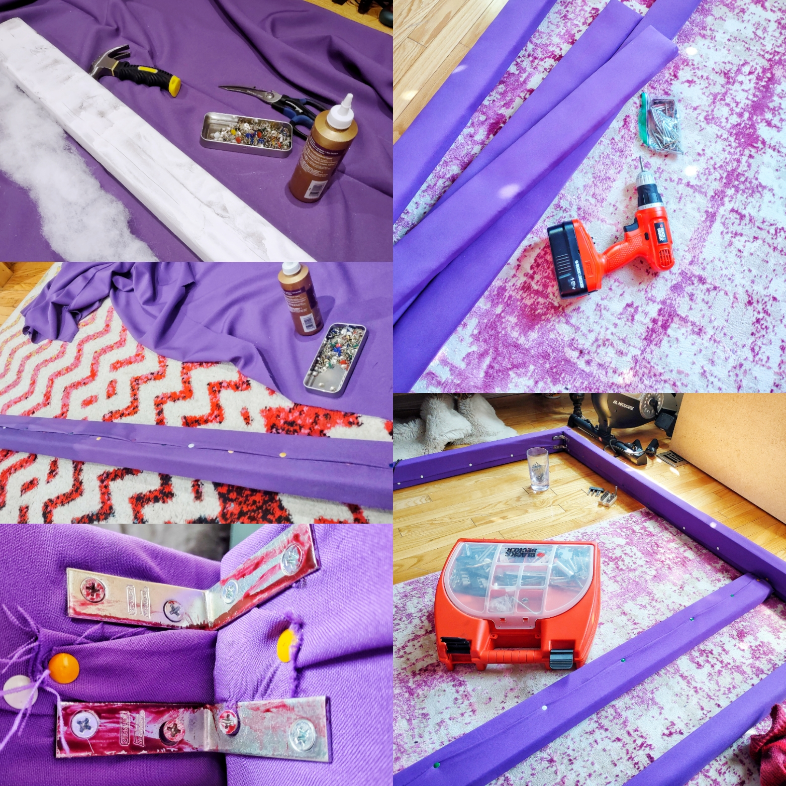
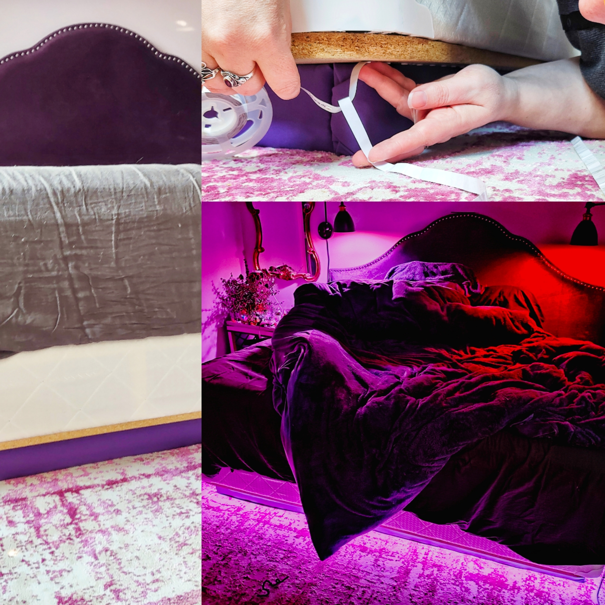

I built a bedframe from scratch because I wanted something that A. could act as a nightlight, B. would match with a purple velvet headboard, and C. could be fully integrated into my smart home hub. Off-the-shelf options for integrated bed lighting were expensive and limited, (so much beige), so designing/fabricating my own frame from scratch seemed the most obvious solution. The LEDs are fully addressable and controlled through Google Home, so I can adjust brightness, color, and timing with voice commands or automation.


Baby's First Blender Doughnut
A tutorial created by Andrew Price (aka Blender Guru), the Blender doughnut has basically become the “Hello, World” of 3D design, so much so that it can be hard to find reference images on doughnuts online that haven't been generated. I'm not sure how much I retained from the course, but it was a nice refresher on some old skills. (Yes, I know the dough is too shiny. Next time!)
The Flowerwall
I designed and built a giant flower wall for my home. The flowers are attached to a net, which makes the whole thing light, flexible, and rollable, (perfect for moving it around without spilling errant flowers everywhere), and used long sticks along the top counteract sagging, (gravity is no one’s friend), and as a rigid place to attach anchor points, making sure it didn't collapse under its own ambition.
It's a simple thing at heart, but often simple is best.
Since it's inception and creation in 2016, it's visited several cities, starred in a few weddings, and is still living its best life. It's currently up in my home in Toronto, where it's grown in size by 2 feet since it's last installation.